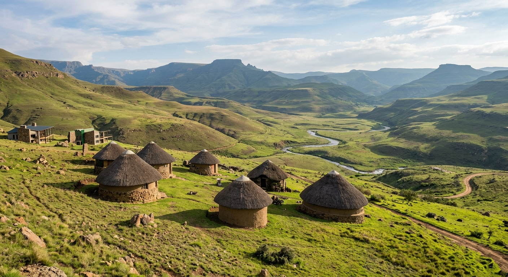
Discover natural wonders, rich culture, and adventure
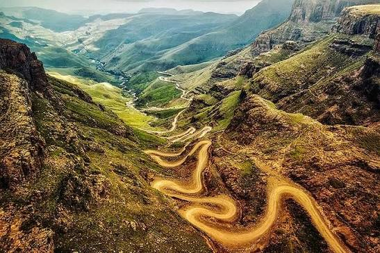
Sani Pass is a lagendary, breathtaking mountain passsituated on the dramatic border between South Africa and Lesotho, scaling the towering Drakensberg escarpment
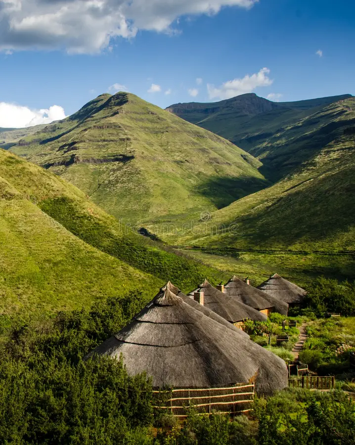
Tsehlanyane National Park is Lesotho's largest national park, nestled deepl in the rugged, remote wilderness of the Maloti Moutains within the Leribe district.
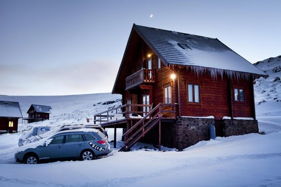
Afriski Mountain Resort is Africa's premire high-altitude adventure and winter sports destination,nestled deep in the Maluti Mountains of Lesotho at an elevation of over 3,000 meters
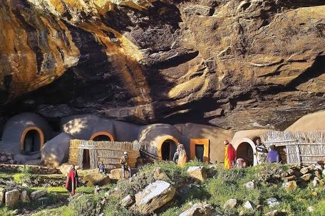
Located in the Berea District of Lesotho the Kome Cave Dwellings feature unique mud huts build under a towering sandstone cliff overhang. Build in the 19th century by clans fleeing Lifaqane wars.
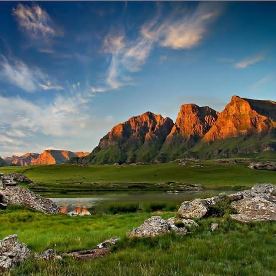
Sehlabathebe National Park is Lesotho's oldest national park and a breathtaking UNESCO World Heritage site located in the southeastern Maloti Mountains near the Drakensberg escarpment
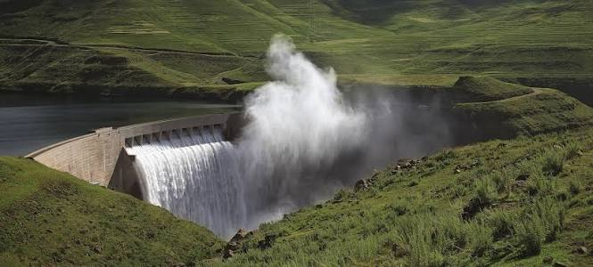
A concrete double curvature arch dam on the Malimatso River in the Maluti mountains of Lesotho.it ias a centerpiece of the Lesotho Highlands Water Project
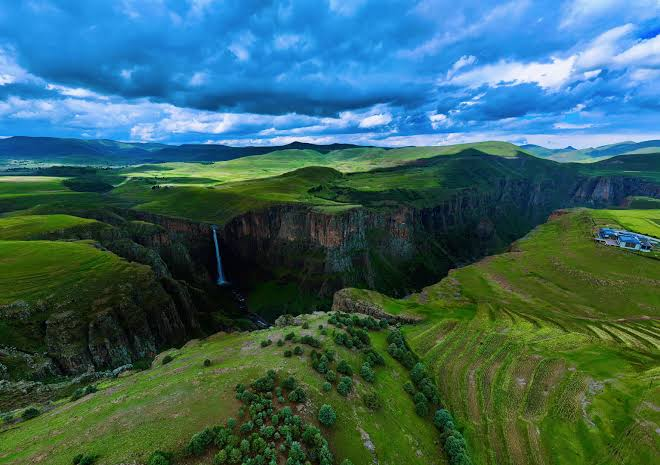
Maletsunyane Falls is one of the most famous and breathtaking naturl attraction in Lsesotho. Located near the mountain town of Semonkongthis stunning waterfall drops 192 meters(630 feet) in a single stream down a dramatic cliff into a deep green gorge
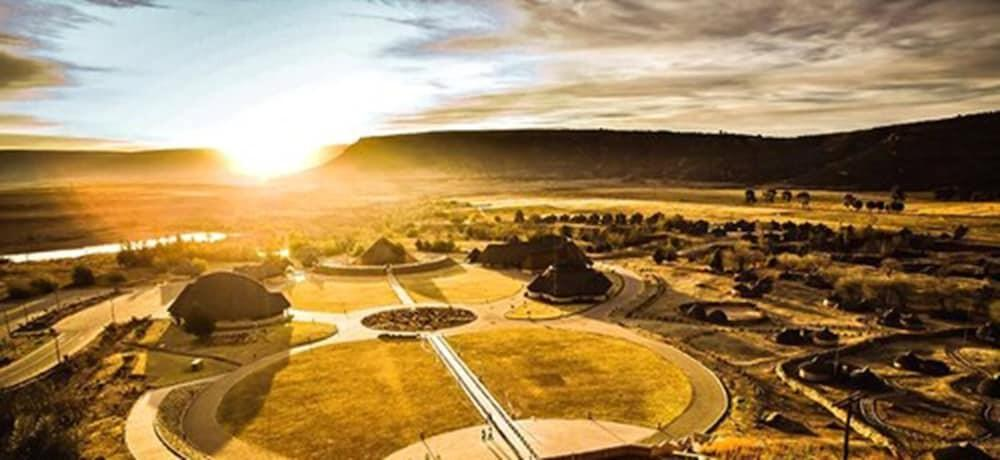
Thaba Bosiu, meaning "Mountain at Night," is a historic flat-topped sandstone plateau in Lesotho. Serving as King Moshoeshoe I’s impenetrable 19th-century fortress, it united and protected the Basotho nation against invaders. Today, this sacred national monument houses royal graves and stands as the revered birthplace of the Basotho people.
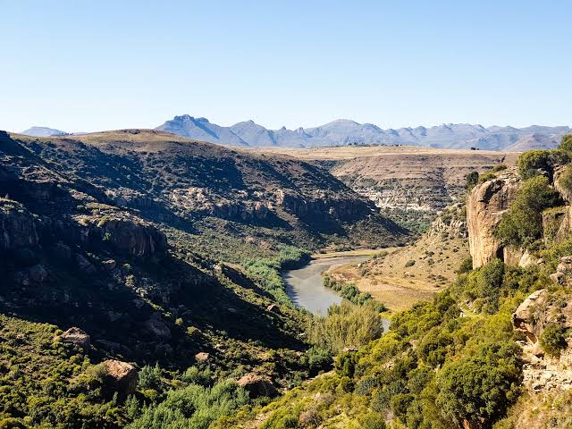
Malealea is a scenic mountain village in Lesotho known for dramatic sandstone cliffs, valleys, and waterfalls. Popular for pony trekking, hiking, and rural cultural experiences, it offers a peaceful escape into highland Basotho life and outdoor adventure amidst sweeping natural landscapes.
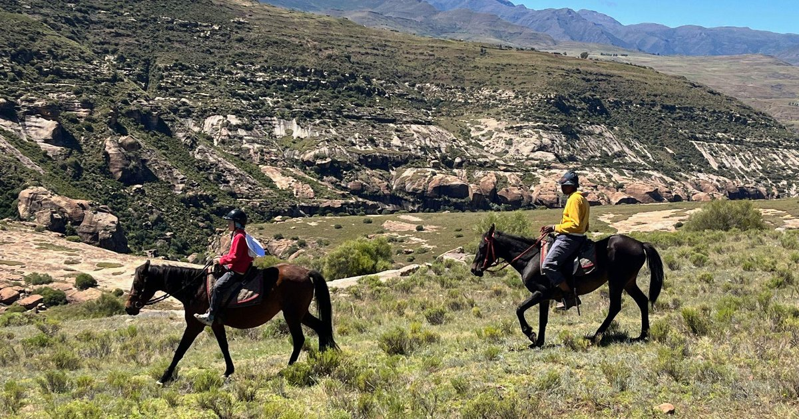
Because many villages in the mountains don't have paved roads, people still use tough Basotho ponies to get around. Tourists love booking guided horse rides through the valleys and mountains (especially in places like Semonkong and Malealea) to see villages and scenery you can't reach by car.
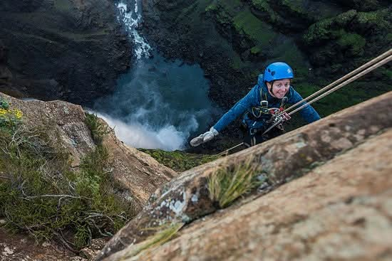
Thrill seekers can rappel down the cliff face right beside the waterfall the highest commercial abseil site in the world!
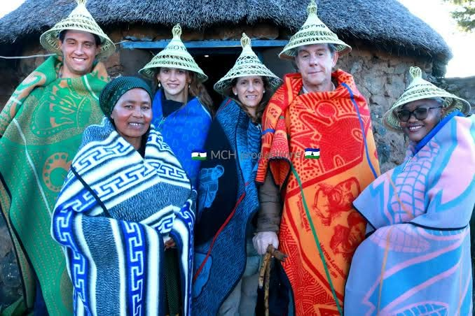
Many visitors stay at rural lodges where they can watch local bands play traditional instruments (like the lesiba or koriana), buy woven Basotho hats (mokorotlo) and blankets, and try traditional food like papa and moroho.
Tourists go to Maletsunyane Falls in Semonkong just to see the giant waterfall dropping straight down into a deep canyon. For people who want an extreme thrill, they strap into a harness and rope and walk backwards down the cliff right next to the waterfall (this is called abseiling).
Thaba Bosiu: Tourists climb up the flat-topped mountain to see where King Moshoeshoe I protected the Basotho nation and to learn how Lesotho was founded. Kome Caves: Visitors go to see the traditional mud houses built directly inside giant rock caves where descendants of the original families still live today.
Driving up Sani Pass is famous because the road is unpaved, very steep, and zig-zags all the way up the cliffside. Tourists hire 4x4 vehicles to make the drive just for the excitement and to take photos from the top of the clouds.